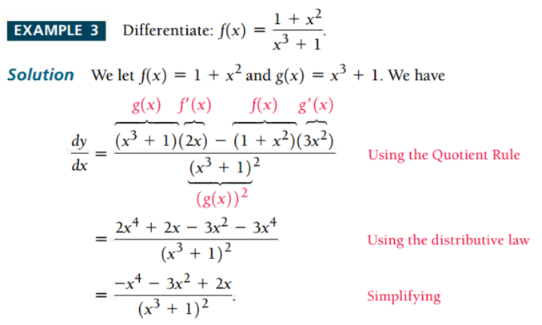
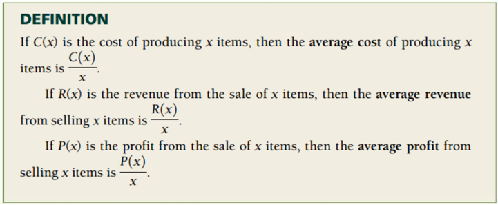
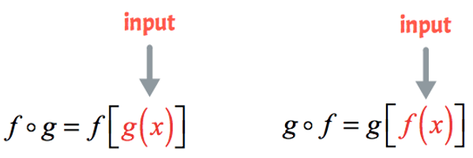

Topic 5 Rules of Derivative
This note focuses on the basic rules of derivative.
5.1 Review of Derivative
We defined the derivative of a function \(y = f(x)\), denoted by \(y^\prime = f^\prime(x)\), to be instantaneous rate of change \[ f^\prime(x) = \lim_{h \to 0}\frac{f(x+h)-f(x)}{h} \]
The following basic rules were also introduced to calculate derivatives easier.
\(f(x) = c\), then \(f^\prime(x) = (c)^\prime = 0\).
\(f(x) = x\), then \(f^\prime(x) = (x)^\prime = 1\).
\(f(x) = x^a\), then \(f^\prime(x) = (x^a)^\prime = ax^{a-1}\). for any real number \(a\).

Properties:
\([bf(x)]^\prime = b[f(x)]^\prime\)
\([f(x) + g(x)]^\prime = [f(x)]^\prime + [g(x)]^\prime\)
We will continue to introduce more rules and properties of derivatives this week.
5.2 Leibniz Notation
In calculus, Leibniz’s notation uses the symbols \(dx\) and \(dy\) to represent infinitely small (or infinitesimal) increments of \(x\) and \(y\), respectively, just as \(\Delta x\) and \(\Delta y\) represent finite increments of \(x\) and \(y\), respectively.
Consider \(y\) as a function of a variable \(x\), or \(y = f(x)\). If this is the case, then the derivative of \(y\) with respect to \(x\), which later came to be viewed as the limit
\[ \lim_{{\Delta x\rightarrow 0}}{\frac {\Delta y}{\Delta x}}=\lim_{{\Delta x\rightarrow 0}}{\frac {f(x+\Delta x)-f(x)}{\Delta x}}, \]
was, according to Leibniz, the quotient of an infinitesimal increment of \(y\) by an infinitesimal increment of \(x\), or
\[ \frac{dy}{dx}=f^\prime(x), \]
The infinitesimal increments are called differentials. From now on, we will use the following notations interchangeably.
\[ \frac{d f(x)}{dx} \text{ , } \frac{d}{dx}f(x), \text{ , and } f^\prime (x) \]
5.3 Multiplicative Rule
If a function that has a complex form can be re-expressed into a product of two relatively simple functions, then we can use the multiplicative rule to find the derivative.
Let \(f(x)\) and \(g(x)\) be the two differentiable functions (i.e., the derivative of both functions exists everywhere in the domain).
\[ \frac{d}{dx}[f(x)g(x)] = f^\prime(x) g(x) + f(x) g^\prime(x) \]
Example 1: Find the derivative of the following function.
(a). \(y = \sqrt[3]{x^2}(2x - x^2)\)
(b). \(y = (6x^3 - x)(10 - 20x)\)
Solution We use the multiplicative rule to calculate the above derivative.
(a). \(y^\prime = [x^{2/3}(2x - x^2)]^\prime = (x^{2/3})^\prime(2x - x^2) + x^{2/3}(2x - x^2)^\prime\) \[ = \frac{2}{3}x^{2/3-1}(2x-x^2) + x^{2/3}(2 - 2x) =\frac{2}{3}x^{-1/3}(2x-x^2)+x^{2/3}(2 - 2x) \] \[ =\frac{2}{3}x^{2/3}(2-x) + 2x^{2/3}(1 - x) = 2x^{2/3}[(2-x)/3+1 - x] \]
\[ = 2x^{2/3}\frac{2-x+3(1-x)}{3}=\frac{2x^{2/3}(5-4x)}{3} \]
(b). \(y^\prime = [(6x^3 - x)(10 - 20x)]^\prime = (6x^3 - x)^\prime(10 - 20x) + (6x^3 - x)(10 - 20x)^\prime\)
\(= (18x^2 - x)(10 - 20x) + (6x^3 - x)\times (-20) = -480x^3+180x^2+40x-10\)
Example 2: (This example is taken from the textbook)
5.4 Quotient Rule
The quotient rule can be used for differentiation when taking the derivative of a function divided by another function. For example, rational functions are this type of question.
Let \(f(x)\) and \(g(x)\) be two differentiable functions. The quotient rule of the derivative is given in the following.
\[ \frac{d}{dx} \left(\frac{f(x)}{g(x)}\right) = \frac{f^\prime(x)g(x) - f(x)g^\prime(x)}{g^2(x)} \]
The following animated graph shows how to manipulate the terms algebraically.

Example 3. Find the derivative of the following functions.
(a). \(W(z) = (3z + 9)/(2 -z)\)
(b). \(h(x) = 4\sqrt{x}/(x^2 - 2)\)
Solution: Using the quotient rule, we have
(a). \(W^\prime(z) = [(3z+9)^\prime(2-z) - (3z+9)(2-z)^\prime]/(2-z)^2\) \[ = \frac{3(2-z)-(3z+9)(-1)}{(2-z)^2} = \frac{15}{(2-z)^2} \]
(b). \(y^\prime = \left[(4\sqrt{x})^\prime (x^2-2) -(4\sqrt{x})(x^2-2)^\prime\right]/(x^2-2)^2\) \[ = \frac{(2/\sqrt{x})(x^2-2)-8x\sqrt{x}}{(x^2-2)^2} = -\frac{6x\sqrt{x}+4/\sqrt{x}}{(x^2-2)^2}. \]
Example 4 (This example is taken from the textbook)

Important Business Functions: Cost, Revenue, and Profit-related functions and applications.

Example 5 (This example is also taken from the textbook)
Paulsen’s Greenhouse finds that the cost, in dollars, of growing x hundred geraniums is modeled by
\[
C(x) = 200 + 100 \sqrt[4]{x}
\]
If revenue from the sale of x hundred geraniums is modeled by
\[
R(x) = 120 + 90\sqrt{x}
\]
find each of the following.
The average cost, average revenue, and average profit when 300 geraniums are grown and sold.
The rate at which the average profit is changing when 300 geraniums are grown and sold.

5.5 Chain Rule
Before introducing the Chain Rule, we first review the definition of a composite function.
5.5.1 Composite Function
Suppose the two given functions are \(f\) and \(g\), the composition of \(f\) and \(g\), denoted by \(f\circ g\), is given by
\[ f\circ g (x) = f(g(x)) \ \ \ \text{ and } \ \ \ \ g\circ f (x) = g(f(x)) \] 
Example 6 Let \(f(x) = 2x^2 - 3x -1\) and \(g(x) = -x + 5\). Find \(f\circ g\).
Example 7 Let \(f(x) = 1/(x+3)\) and \(g(x) = (-3x-2)/x\). Find \(f\circ g\).
5.5.2 Chain Rule
The following Chain Rule is used to find the derivative of composite functions.
\[ [f(g(x))]^\prime = f^\prime(g(x)) \times g^\prime(x) \]
Example 8 Find the derivative of the following function \[ f(x) = \sqrt[4]{\frac{x + 3}{x - 2}}. \]
Example 9: Find the derivative of \(f(x) = \sqrt[3]{x^5 + 6x}\).